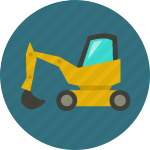

Welcome Message That Presents The Company
You can easily change the formatting of selected text in the document text by choosing a look for the selected text from
the Quick Styles gallery on the Home tab.
You can also format text directly by using the other controls on the Home tab.
Most controls offer a choice of using the look from the current theme or using a format that you specify directly.
The galleries includeitems that are designed to coordinate with the overall look of your document.
MORE
The galleries includeitems that are designed to coordinate with the overall look of your document.
MORE

The galleries includeitems that are designed to coordinate with the overall look of your document.
MORE
The galleries includeitems that are designed to coordinate with the overall look of your document.
MORE
Latest News
Testimonials
23
DEC
To change the looks available in the
Both the Themes gallery and the Quick Styles gallery provide reset commands so that you can always restore the look of your document.
READ MORE
23
DEC
To change the looks available in the
Both the Themes gallery and the Quick Styles gallery provide reset commands so that you can always restore the look of your document.
READ MORE
To change the overall look of your document, choose new Theme elements on the Page Layout tab. To change the looks available in the Quick Style gallery. Both the Themes gallery and the Quick Styles gallery provide
Change Current Quick Style Set.